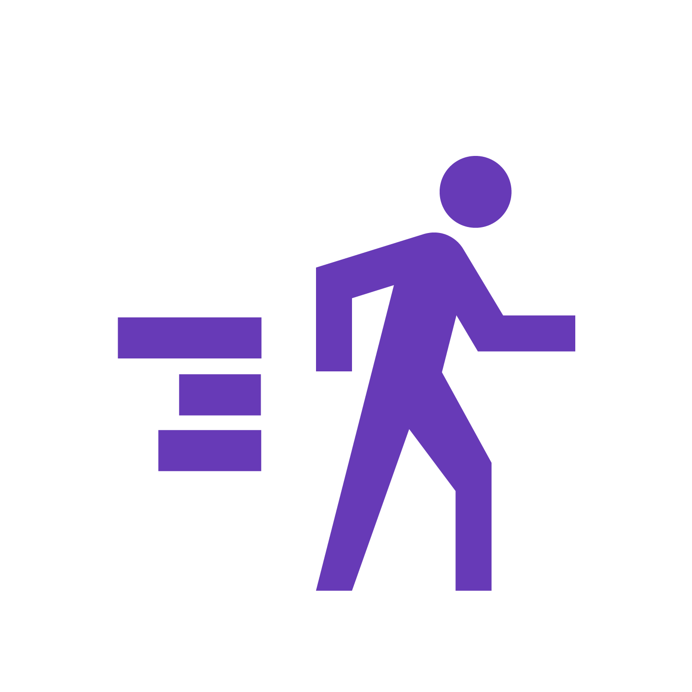

<div>
  <section class="mat-typography">
    <mat-toolbar color="primary">
      <mat-toolbar-row>
        <span class="mat-display-2 mat-light-text page-title">TrackFic</span>
      </mat-toolbar-row>
    </mat-toolbar>
    <mat-tab-group>
      <mat-tab>
        <ng-template mat-tab-label>
          <mat-icon class="tab-icon">directions_walk</mat-icon>
          Foot Traffic
        </ng-template>
        <div class="inner-tab-with-margin">
          <mat-grid-list class="grid-container" cols="4" rowHeight="fit" style="height: 450px">
            <mat-grid-tile
                [colspan]="3"
                [rowspan]="2"
                [style.background]="lightblue">
                <iframe 
                  src="http://hackwestern5.purplelettuce.net:3000/d-solo/TsGfeVLmz/new-dashboard-copy?panelId=2&orgId=1&refresh=5s&theme=light" width="100%" height="100%" frameborder="0">
                </iframe>
            </mat-grid-tile>
            <mat-grid-tile
                [colspan]="1"
                [rowspan]="1"
                [style.background]="lightgreen">
              <mat-card class="occupancy-card">
                <mat-card-header class="occupancy-card-header">
                  <mat-card-title class="occupancy-header-text mat-light-text"><span class="mat-headline mat-light-text">Current Occupancy</span></mat-card-title>
                </mat-card-header>
                <mat-card-content class="occupancy-card-content">
                  <span class="mat-headline">Current: </span><span class="mat-display-2 mat-light-text">{{current}}</span>
                  <br/>
                  <span class="mat-title mat-light-text">Typical: </span><span class="mat-display-1 mat-light-text">{{typical}}</span>
                  <br/>
                  <span class="mat-display-2 mat-light-text"
                  [ngClass]="{'positive' : lessBusy == true, 'negative' : lessBusy == false}"
                  >{{percentDiff}}%</span>
                  <span class="mat-subheading-2" *ngIf="lessBusy == true"> less busy than normal</span>
                  <span class="mat-subheading-2" *ngIf="lessBusy == false"> more busy than normal</span>
                </mat-card-content>
              </mat-card>
            </mat-grid-tile>
            <mat-grid-tile
                [colspan]="1"
                [rowspan]="1"
                [style.background]="lightgreen">
              <button mat-raised-button color="primary"
                matTooltip="Receive email alerts when the occupancy is below a specified theshold"
                (click)="openDialog()">
                <mat-icon class="tab-icon">add_alert</mat-icon>
                Subscribe to Email Alerts
              </button>
            </mat-grid-tile>
          </mat-grid-list>
        </div>
      </mat-tab>
    
      <mat-tab>
        <ng-template mat-tab-label>
          <mat-icon class="tab-icon">devices_other</mat-icon>
          Connected Devices
        </ng-template>
        <div class="inner-tab-with-margin">
          <iframe src="http://hackwestern5.purplelettuce.net:3000/d-solo/TsGfeVLmz/new-dashboard-copy?panelId=4&orgId=1&refresh=5s&tab=time%20range&theme=light&from=now-1h&to=now" width="100%" height="450px" frameborder="0">
          </iframe>
        </div>
      </mat-tab>
    </mat-tab-group>
  </section>
</div>

